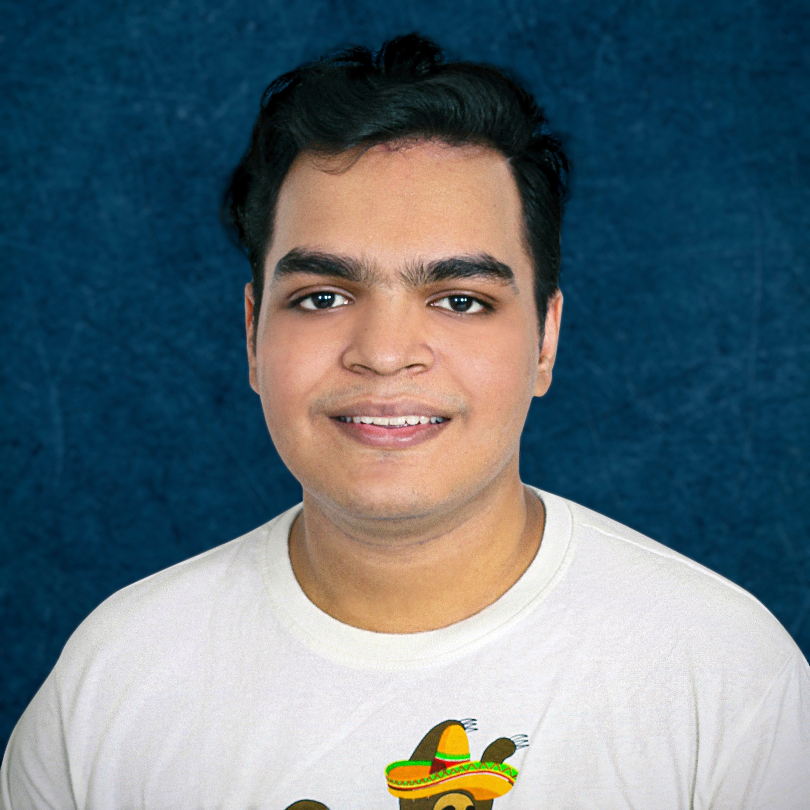

Joyanta J. Mondal
I am a researcher from Dhaka, Bangladesh, currently based in Dallas, Texas, with an M.S. in Computer Science from the University of Delaware.
My earlier research focused on developing lightweight and deployable machine learning systems for real-world problems. Much of it was in computer vision under resource constraints, with applications in medical imaging and environmental sensing. I'm now extending this focus toward trustworthy and reliable AI, exploring how foundation models and learning systems can be adapted and evaluated to improve their reliability, with particular interests in parameter-efficient fine-tuning, evidence-grounded reasoning and memory in large language models, and reliable model evaluation. I'm also interested in reinforcement learning for structured learning and decision-making.
My Erdős number is 4.
Outside research: avid gamer (known by the in-game name LePotatoGuy), anime and comic enthusiast, cyclist, and a chess player rated ~400 (which means I lose often and confidently). Feel free to test me anyway.

News
- Aug 2026 AwardAwarded Quality Journal Publication Award from BRAC University.
- Dec 2025 DegreeCompleted M.S. in Computer Science from the University of Delaware!
- Nov 2025 ReviewInvited as reviewer at PeerJ Journal.
- Aug 2025 Op-EdOp-Ed published in The Daily Star on responsible AI use in education. [Link]
- Jul 2025 PaperBAMPolyp (Mamba-based polyp segmentation) accepted at CVAMD @ ICCV 2025.
- May 2025 PaperTwo-step copyright-aware image generation model accepted at IFIP Summer School on Privacy and Identity Management.
- May 2025 AwardAwarded Quality Journal Publication Award from BRAC University.
- Apr 2025 PaperGCN+Transformer model for CB2 receptor ligand activity prediction accepted at IJCNN. [Link]
- Mar 2025 ReviewInvited as reviewer at NeurIPS 2025.
- Jan 2025 PaperAdversarial attacks paper (ET DeepFool) accepted at Nature Scientific Reports.
- Dec 2024 FellowshipSelected for NSF-funded NRT-MIDAS fellowship program.
- Oct 2024 PaperInvolution Fused ConvNet for ASD eye-tracking classification accepted at EAAI.
- Aug 2024 EnrollmentStarted graduate studies at the University of Delaware.
- Feb 2023 Op-EdOp-Ed published in The Daily Star on ChatGPT in education. [Link]
Selected Publications
Honors & Awards
Reviewer Work
- Reviewer, NeurIPS 2025
- Reviewer, ICLR 2025 (13th)
- Reviewer, ACM CSCW 2024
- Judge, Undergraduate Research Expo, University of Alabama at Birmingham (Fall 2023)
- Reviewer, 1st WACV 2024 Workshop on Vision-Based Understanding for Low-Resource Languages (WVLL)
- Reviewer, ACM CHI 2024
- Reviewer, ICLR 2024 (12th)
- Reviewer, NeurIPS 2023
- Reviewer, NeurIPS 2024 Workshop on Foundation Model Interventions (MINT 2024)
- Reviewer, ACM Journal on Computing and Sustainable Societies
- Reviewer, PeerJ Journal
Skills
Education
Experience
Courses: CSE472 (HCI), CSE474 (Simulation & Modeling), CSE484 (Cloud Computing)
Course: CSE474 — Simulation and Modeling
Collaborations
My frequent collaborators include Dr. Ibne Farabi Shihab (Amazon), Meem Arafat Manab (researcher, Universidad Politécnica de Madrid, Spain), Md Farhadul Islam (phd researcher, Kentucky), Dr. Jannatun Noor (United International University, Bangladesh), and Dr. A. B. M. Alim Al Islam (BUET, Bangladesh).
Lineage
I am honored to be part of a distinguished academic lineage connecting to figures such as Isaac Newton, De Morgan, Thomson, and Rutherford.